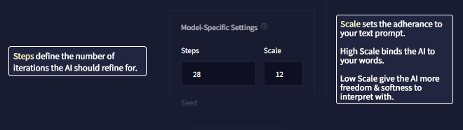

Steps & Prompt Guidance
Steps

Steps define the number of iterations the AI should refine from the initial creation of your prompt. You can use a low amount to quickly generate and see the way your image composition is headed, or you can use more Steps to generate a full image. Too many Steps may also be counterproductive, barely improving the generation. It's recommended to keep Steps relatively low until you find a generation with a composition you like, and then use the Enhance button on it for further refinement.
小贴士： If you are subscribed to the Opus tier, images generated with 28 or less Steps won't cost any Anlas, as long as the resolution stays under the normal resolution range and they are not generated in batches.
Prompt Guidance
The Prompt Guidance value indicates how much the AI will respond to your prompt. A greater value can help the AI stick closer to the overall intent of your text prompt but set too high, and it may have an adverse effect.
Sometimes the Prompt Guidance value will adjust how refined and strong the effect will be: a lower Guidance number can be more painterly and softer, while a higher Guidance value provides more fine detail and sharpness.
An average Guidance Guide you can go by:
Guidance Value 2 - 6:
Allow the AI to loosely interpret the text prompt. Great for psychedelic looks and concepts, as well as fun landscapes. Might be unpredictable!
Guidance Value 7 - 14:
Strong guidance towards the text of your prompt.
Guidance Value 15 - 20:
Stricter adherence to your text prompt. Generations may appear cleaner but also stiffer. Visual artifacts may begin to appear! Decrisper setting recommended from these values up
Guidance Value 21+:
Overly strong focus on the text prompt. Might be unpredictable!
Decrisper
This setting, that can be activated or deactivated next to the Prompt Guidance slider, mitigates certain color and visual artifact issues that can happen when generating images with higher Guidance.
While it is designed and recommended for images with a high Guidance value, Decrisper has a visible impact on images generated with any Guidance value, so you can also use it for lower Guidance images if you prefer.